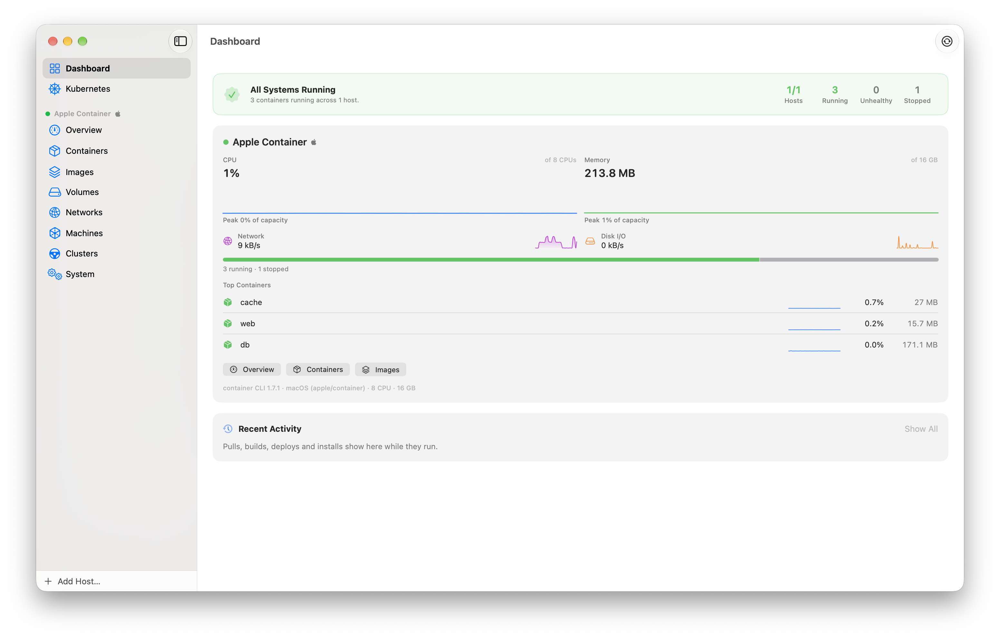
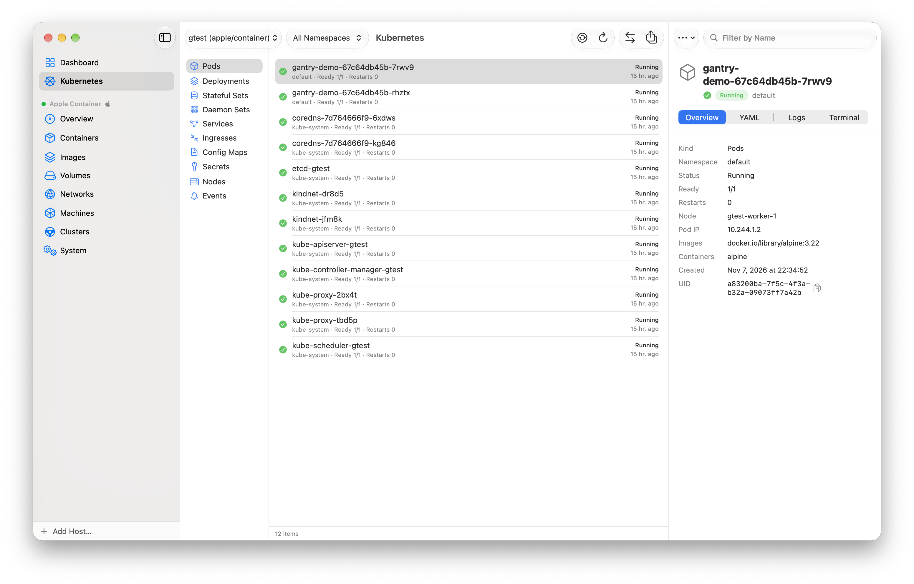
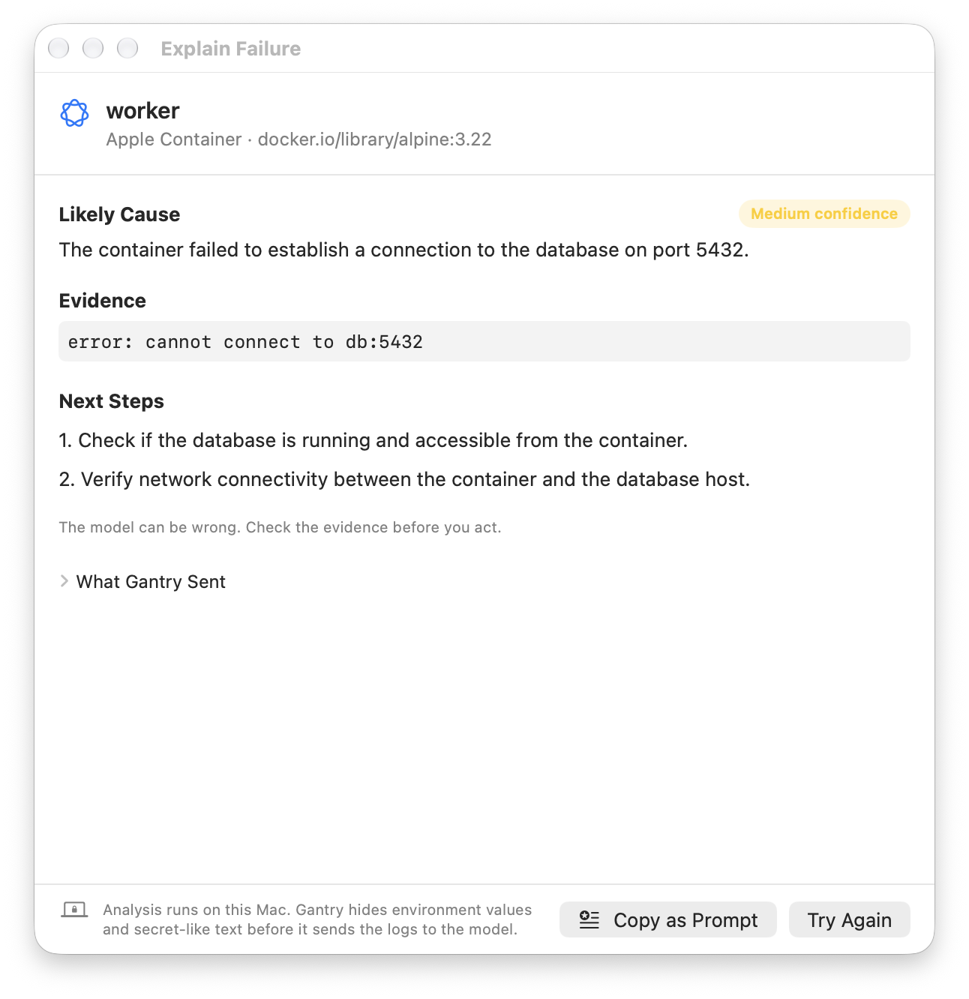
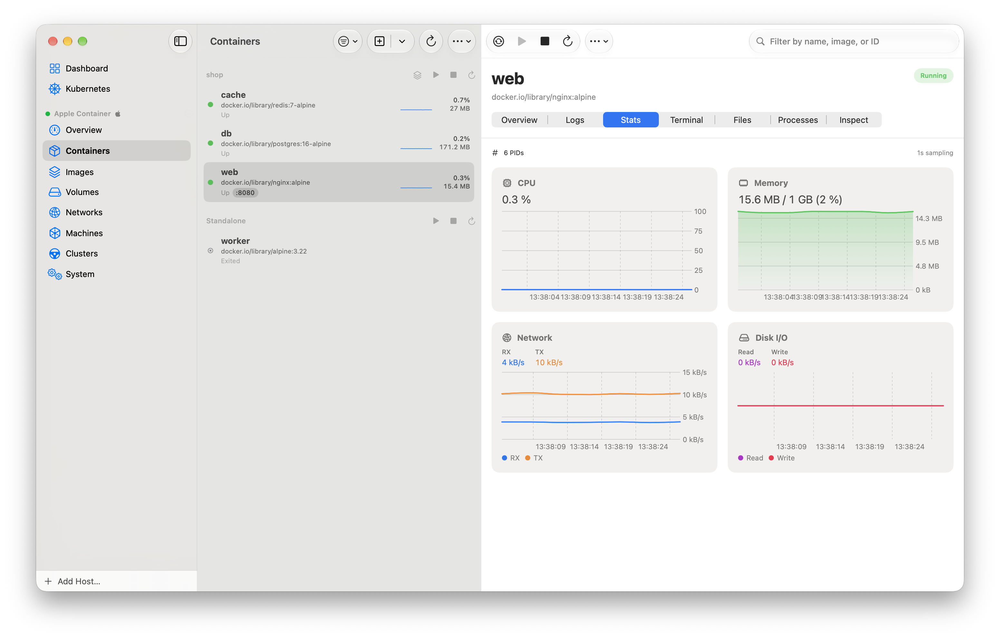
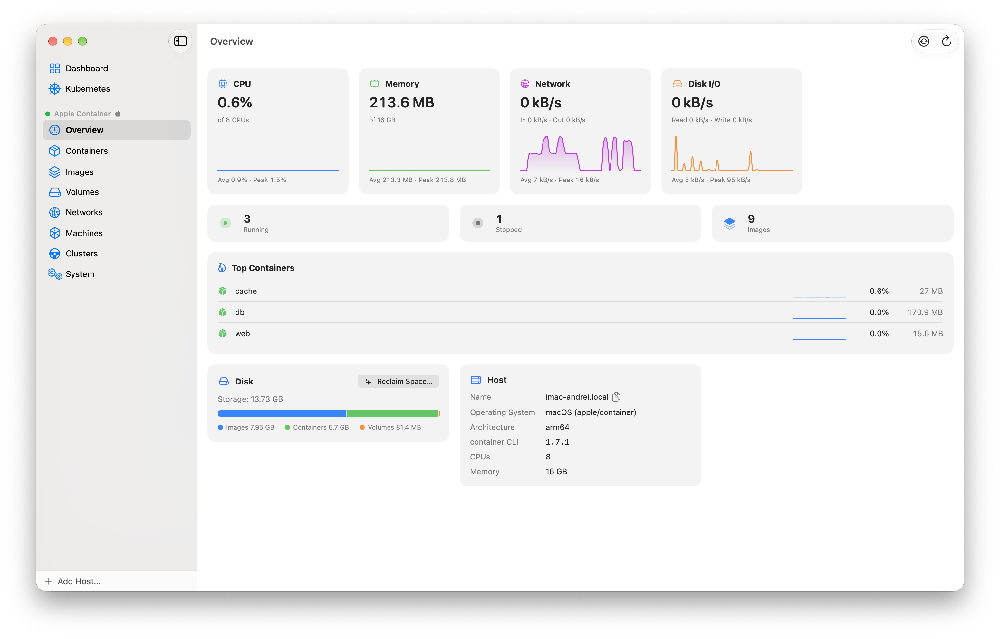
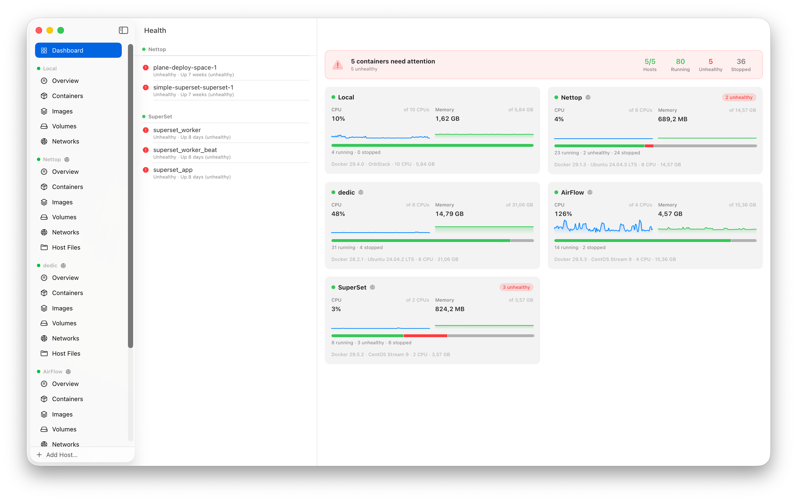

De native macOS-GUI voor Apple container
en Docker — je hele vloot op één dek.
Gantry is een gratis, opensource Mac-app voor Apples container-tool en voor Docker, lokaal en via SSH. Draai containers, Kubernetes-clusters, machines en Compose-projecten op apple/container vanuit één venster, naast je Docker-hosts. Een gratis alternatief voor Docker Desktop en OrbStack voor de Mac. Geen Electron. Geen abonnement. Geen limieten.
macOS 26+ · Apple silicon & Intel · MIT-licentie · 28 talen · inclusief MCP-server

Werkt met alles wat je al gebruikt
Kubernetes, Apple Intelligence en de rest van macOS
Gantry 0.27.0 voegt een Kubernetes-browser toe, legt mislukte containers uit met Apple Intelligence en werkt samen met Spotlight, Siri, widgets en het bedieningspaneel. Het ondersteunt apple/container 1.7.1 en heeft een nieuw ontwerp volgens Apples Human Interface Guidelines.

Kubernetes-browser
Blader door pods, deployments, stateful sets, daemon sets, services, ingresses, config maps, secrets, nodes en gebeurtenissen van elke kubeconfig-context. Volg podlogs, open een shell, stuur een poort door, schaal, herstart een rollout en pas YAML toe. Gantry praat zelf met de Kubernetes-API, dus je kunt door een cluster dat met container cluster create is gemaakt bladeren zonder iets anders te installeren: geen kubectl.

Leg fout uit met Apple Intelligence
Kies Leg fout uit… bij een gecrashte container of een mislukte bewerking. Gantry stuurt recente logs en gegevens, zonder omgevingswaarden en zonder tekst die op geheimen lijkt, naar het model op het apparaat en toont de waarschijnlijke oorzaak, het bewijs en de volgende stappen. Lange logs kunnen naar Private Cloud Compute gaan (macOS 27). Het paneel toont precies wat er is verstuurd.

Onderdeel van macOS
Meldingen met Herstart, Toon logs en Kopieer als prompt. Spotlight vindt containers, Compose-projecten en hosts. Acties voor Siri en Opdrachten, een widget voor de vlootgezondheid, regelaars in het bedieningspaneel voor de apple/container-services of een favoriete container, en gantry://-links voor scripts.
Commandopalet
Druk op ⌘K en typ. Eén zoekopdracht dekt containers, Compose-projecten, images, volumes, netwerken, machines, clusters en hosts, met acties zoals Start, Toon logs en Open shell.
Veel tegelijk aanpakken
Selecteer meerdere containers, images, volumes of netwerken en start, stop, herstart of verwijder ze in één stap, met voortgang en een resultaat per onderdeel.
Plak een docker run
Plak een docker run-, podman run- of container run-commando en Gantry vult het formulier Nieuwe container in, met een lijst van de flags die het niet kan gebruiken. Kopieer elke container terug als commando, of bewaar hem als recept. Zo werkt het
Containers op een externe schijf
Verplaats alle apple/container-gegevens naar een externe schijf, bewaar volumes op een schijf naar keuze en krijg een duidelijke waarschuwing als die schijf niet is aangesloten. Lees de gids
Alles voor Docker en apple/container, helemaal in Mac-stijl
Een compleet, gefocust commandocentrum voor je containers — standaard live en zo snel dat het lokaal aanvoelt, ook als het dat niet is.
Eén dashboard voor elke host
Lokale daemon, SSH-vloot en apple/container op één scherm — live sparklines voor CPU en geheugen, een uitsplitsing van containerstatussen en gezondheidsproblemen die je direct naar de boosdoener brengen.
Logs op steroïden
Realtime volgen, ⌘F-zoeken met regex of letterlijk, een niveaufilter (Error→Trace), ANSI-kleuren, een buffer van 50.000 regels — en samengevoegde stacklogs voor een heel Compose-project.
web op prod-eu is gestopt met code 1.
api op dedic heeft de statuscontrole niet doorstaan.
Weet het zodra het misgaat
Een native melding wanneer een container op welke host dan ook crasht, zonder geheugen komt te zitten of ongezond wordt. Klik erop om direct naar de container te gaan — stops die je zelf uitvoert, blijven stil.
Realtime statistieken
CPU, geheugen, netwerk- & schijf-I/O live in grafieken, elke seconde gemeten.
Ingebouwde exec-terminal
Volledige terminalemulatie in elke actieve container, lokaal of remote — met kleurthema's (System, Solarized, Dracula, Nord).
Remote hosts via SSH
Tunnelt precies zoals docker -H ssh:// via dial-stdio — ProxyJump-bastions, authenticatie met meerdere sleutels, automatisch opnieuw verbinden. Niets te installeren op de server, geheimen in de sleutelhanger. Importeer met één klik uit ~/.ssh/config en docker context ls.
Bestandsbrowser met slepen & neerzetten
Blader door het bestandssysteem van een container, verplaats bestanden erin en eruit en sleep hele mappen er direct vanuit de Finder in — op Docker- en apple/container-hosts.
Openen in browser & doorsturen
Eén klik opent een gepubliceerde poort. SSH-poorten worden automatisch naar localhost getunneld — en als die bezet is, kiest Gantry een vrije poort die je kunt aanpassen.
Bereikbaar via internet
Eén klik maakt een gepubliceerde poort bereikbaar via een Cloudflare Tunnel. Gantry installeert cloudflared voor je en geeft je dan een quick tunnel (geen account, een *.trycloudflare.com-URL) of een named tunnel op je eigen domein — ideaal voor een dev-preview, een webhook of om een AI-agent een container op je Mac te laten bereiken.
Compose, overal
Containers worden gegroepeerd per Compose-project. Start een Compose-bestand op elke host — lokale Docker, SSH of apple/container — met een ingebouwde YAML-editor; de runner past zich aan per engine.
Private registries, automatisch
Pulls gebruiken de docker login die je al hebt gedaan — Gantry haalt inloggegevens uit ~/.docker/config.json, credential helpers en de sleutelhanger, bij aanmaken, Snel uitvoeren en Compose.
Images bouwen & pullen
Sleep een Dockerfile op het venster om te bouwen met een live log, of pull op referentie met voortgang per laag. Tag, schoon op en bekijk de laaggeschiedenis. Een badge markeert images die voor een andere CPU-architectuur zijn gebouwd dan die van de host.
Maak ruimte vrij
Eén paneel toont wat ruimte inneemt — zwevende images, gestopte containers, ongebruikte volumes, buildcache — met groottes, en schoont elk onderdeel apart of alles tegelijk op. Op apple/container voert het ook “Trim schijf” uit.
Touch ID bij destructieve acties
Zet het aan en Gantry vraagt om Touch ID — of je inlogwachtwoord — voordat je een container of host verwijdert. Geheimen staan al in de sleutelhanger.
Terminalthema's
Geef de ingebouwde shell het thema System, Solarized Dark, Dracula of Nord — een volledig ANSI-palet met voorgrond, achtergrond en 16 kleuren, live toegepast.
De native macOS-GUI voor Apple container
Apples container-tool draait Linux-containers als lichte VM's op Apple silicon, maar wordt alleen als commandoregeltool geleverd. Gantry is de desktop-app ervoor: wat Docker Desktop voor Docker is, is Gantry voor container. Het ondersteunt elke container-CLI van 1.0 tot en met de aanbevolen 1.7.1 en zet elke functie pas aan als je geïnstalleerde CLI die ondersteunt.
Containers, logs, statistieken en exec
Aanmaken, starten, stoppen, beëindigen en opschonen; live logs, statistieken, een exec-terminal, top en tar-export, in dezelfde interface als je Docker-hosts.
Kubernetes-clusters
Maak een Kubernetes-cluster met container cluster: stel de grootte van de control plane en de workers apart in, kies de CNI en bekijk de nodes, de Kubernetes-versie en de kubeconfig-context. Clusternodes zijn beveiligd tegen per ongeluk stoppen en verwijderen. Lees meer
Lokale images in het cluster
Zet op CLI 1.7 Gebruik lokale images (--shared-image-store) aan, en pods draaien de images die je bouwt of pullt, zonder registry. Op CLI 1.5 en 1.6 klik je met de rechtermuisknop op een image en kies je Laad in cluster.
Duidelijke hints bij een kapotte installatie
Als de clusterservices niet antwoorden, vertelt Gantry je waarom. Bij een Homebrew-build zonder clusterservices krijg je een link naar het ondertekende installatieprogramma; in alle andere gevallen een knop Herstart services.
Containermachines in VS Code
Maak, start en stop Linux-omgevingen met container machine, stel CPU's en geheugen in, open een shell of open de machine in VS Code via Remote-SSH.
Geneste virtualisatie en aangepaste kernels
Start een machine op met geneste virtualisatie (M3 of nieuwer) of je eigen kernel. Start containers op met een aangepaste kernel en extra opstartargumenten.
Compose voor Apple container
apple/container heeft geen compose. Gantry draait je docker-compose.yml: het bouwt, maakt het netwerk en de volumes aan en start de services in de volgorde van depends_on. Servicenamen worden opgelost via netwerk-DNS-aliassen.
Netwerk-DNS-aliassen
Containeraliassen, subtree-aliassen zoals .gateway en korte namen zodra er een standaard-DNS-domein is ingesteld. Elke container krijgt een routeerbaar IP-adres en een hostnaam in de vorm name.domain.
Beheer de image-builder
Bekijk de status, image, CPU's, het geheugen en het IP-adres van de builder. Start hem met opties voor CPU, geheugen en DNS, stop hem of verwijder hem. Is de builder-image verouderd, dan biedt Gantry aan hem opnieuw aan te maken.
Registry-aanmeldingen
Bekijk container registry-aanmeldingen, voeg ze toe of verwijder ze. Het wachtwoord gaat alleen via stdin naar de CLI, en Gantry bewaart geen kopie.
Kernelinstallatie
Installeer de aanbevolen kernel, een kernelbestand of een tar-archief, met live voortgang. Gantry waarschuwt je als er geen standaardkernel is geïnstalleerd.
Services en servicelogs
Start, stop en herstart de container-services, vergelijk client- en serverversie en stream servicelogs, gefilterd op niveau, service en tekst.
Editor voor systeemeigenschappen
Bewerk de container-systeemeigenschappen in config.toml. Gantry markeert de wijzigingen die een herstart nodig hebben en herstart de services voor je. Op CLI 1.7 bewerkt het ook de standaardwaarden in [container.dns]: nameservers, zoekdomeinen en opties.
Commit en Trim schijf
Commit een container naar een image (container commit) en maak schijfruimte vrij met Trim schijf (container clean), ook in het paneel “Maak ruimte vrij”.
Bestandsbrowser: uploaden en downloaden
Blader door de bestanden van een container, download ze of sleep ze naar de Finder (container copy), en sleep er bestanden of hele mappen in.
Snel uitvoeren en Finder
Kies een image, deel een map, koppel poorten, kies een domein en start. Klik in de Finder met de rechtermuisknop op een Compose-bestand en open het met Gantry.
Labels met =
De container-CLI weigert labelwaarden met =. Gantry codeert ze bij het aanmaken en decodeert ze bij het lezen, zodat een waarde als a=b intact blijft.
Eén vloot, twee runtimes
apple/container-hosts staan naast je lokale Docker- en SSH-hosts op één dashboard, met dezelfde sparklines, gezondheidsstatus en storingsmeldingen.
MCP-tools voor agents
De meegeleverde MCP-server geeft agents dezelfde mogelijkheden: containers, machines, clusters en apple_*-systeemtools voor services, builder, registries, eigenschappen, logs en kernels.
De apple/container-gids: elk CLI-commando en de bijbehorende functie in Gantry Kubernetes op apple/container Gantry vs. Docker Desktop, OrbStack en Podman Desktop
Kubernetes op de Mac Van Docker Desktop Externe schijf Van docker run
Gemaakt om door AI bestuurd te worden
Een meegeleverde MCP-server en App Intents stellen elke host — ook SSH-hosts — open voor Claude, Opdrachten, Siri en scripts, met dezelfde mogelijkheden als de GUI: containers aanmaken en beheren, images bouwen en pullen, volumes en netwerken, Compose Up, apple/container-machines en Kubernetes-clusters, de apple_*-systeemtools voor services, builder, registries en kernels, en zelfs een poort delen via een Cloudflare Tunnel.
$ claude mcp add gantry -- \ /Applications/Gantry.app/Contents/Resources/gantry-mcp ✓ MCP-server toegevoegd gantry tools: hosts · containers · images · volumes networks · logs · stats · exec · df $ claude "waarom is superset_worker ongezond op dedic?"
Kopieer als prompt
Druk op ⌥⌘P bij een container en Gantry zet een kant-en-klare debugprompt op je klembord — de host en hoe je die bereikt, de MCP-host_id en tools, de volledige status van de container en een taak die past bij het symptoom.
“Debug de falende statuscontrole.”
“Zoek uit waarom hij steeds crasht.”
Laat ruimte voor je eigen vraag.
Ontworpen alsof het met macOS is meegeleverd
Gesplitste weergave met drie kolommen, Swift Charts, Liquid Glass alleen op zwevende bedieningselementen. Echte schermafbeeldingen, geen mock-ups.



Geen webwrappers. Geen eigen daemons.
Gewoon een snelle, native Mac-app die rechtstreeks praat met de Docker Engine API en met Apples container-CLI.
100% native SwiftUI
Geen Electron. Start direct, gebruikt weinig geheugen, voelt als het besturingssysteem.
Swift 6
Moderne, concurrency-veilige codebase op de nieuwste toolchain.
Directe Engine API
Docker via de Unix-socket, geen Docker-CLI nodig. apple/container via zijn eigen container-CLI.
Automatische updates
Een met EdDSA ondertekende Sparkle-appcast houdt je up-to-date, zonder in de weg te zitten.
Je vragen beantwoord
Alles wat je wilt weten voordat je Gantry installeert.
Wat is de beste GUI voor Apple container?
Gantry is een gratis, opensource native macOS-GUI, gemaakt voor Apples container-tool (apple/container). Het dekt de levenscyclus van containers, logs, statistieken en een exec-terminal, plus de delen van de CLI die andere GUI's niet bereiken: Kubernetes-clusters (container cluster), container-machines, de image-builder, registry-aanmeldingen, kernels, servicelogs en systeemeigenschappen. Het ondersteunt CLI 1.0 tot en met 1.7.1 en zet elke functie pas aan als je CLI die ondersteunt. Zie de apple/container-gids.
Wat is Apple container (apple/container)?
apple/container is de opensourcetool van Apple om Linux-containers op een Mac te draaien. Elke container draait in een eigen lichtgewicht virtuele machine, gebouwd op Apples Virtualization-framework. Er is een Mac met Apple silicon voor nodig, en het wordt geleverd als opdrachtregeltool met de naam container, zonder desktop-app. Gantry voegt die desktop-app toe.
Ondersteunt Gantry container cluster en Kubernetes?
Ja. Op een apple/container-host maakt en verwijdert Gantry Kubernetes-clusters met container cluster (CLI 1.6.1 en 1.7; CLI 1.5.0 tot en met 1.6.0 gebruikt container k8s). Je kiest de naam, de workers, de CPU's en het geheugen van de control plane en van de workers (1.7), de node-image, de CNI en of nodes je lokale images gebruiken (1.7). Gantry toont de nodes, schrijft de kubeconfig en opent het cluster in de Kubernetes-browser. Zie Kubernetes op apple/container.
Kan ik docker compose gebruiken met Apple container?
Ja. apple/container heeft geen compose-commando, dus Gantry regelt de orkestratie via de container-CLI: het bouwt build:-services, maakt het projectnetwerk en benoemde volumes aan en start elke service in de volgorde van depends_on, met de standaard Compose-labels. Servicenamen worden opgelost via netwerk-DNS-aliassen. Open een docker-compose.yml vanuit de Finder, via het menu Archief of door het bestand op het venster te slepen.
Hoe open ik een containermachine in VS Code?
Start de machine in Gantry en klik op Open in VS Code. Gantry opent de machine in VS Code via Remote-SSH, zoals in Apples voorbeeld container-machine-vscode. De image van de machine moet sshd draaien, en VS Code met de extensie Remote-SSH moet geïnstalleerd zijn.
Welke versies van apple/container ondersteunt Gantry?
Gantry heeft de container-CLI 1.0 of nieuwer nodig en raadt 1.7.1 aan. Het leest de geïnstalleerde versie en toont alleen de functies die die versie ondersteunt, bijvoorbeeld workergroottes en de gedeelde imageopslag (1.7), commit (1.6) en “Trim schijf” (1.4). Ontbreekt de CLI of is hij te oud, dan biedt Gantry een begeleide installatie aan.
Kan Gantry door een Kubernetes-cluster bladeren?
Ja. Het onderdeel Kubernetes toont voor elke kubeconfig-context pods, deployments, stateful sets, daemon sets, services, ingresses, config maps, secrets, nodes en gebeurtenissen, met podlogs, een podshell, poortdoorsturingen, schalen, rollout herstarten, verwijderen en “Pas YAML toe”. Gantry praat zelf met de Kubernetes-API, dus je hebt geen kubectl nodig. Zie Kubernetes draaien op een Mac.
Wat stuurt “Leg fout uit” naar Apple Intelligence?
Recente logs en de gegevens van de container, zonder omgevingswaarden en zonder tekst die op geheimen lijkt. Kleine verzoeken draaien op het model op het apparaat. Staat de instelling voor lange logs aan (macOS 27), dan gaan lange logs naar Private Cloud Compute. Het paneel toont wat er is verstuurd. Een voorgesteld commando opent in Terminal, maar draait pas als je op Return drukt. Zonder Apple Intelligence biedt Gantry een prompt aan om in een andere AI-assistent te plakken.
Kan ik een docker run-commando in Gantry plakken?
Ja. Kies in het venster Nieuwe container Plak commando…. Gantry leest docker run, docker create, podman run en container run, vult het formulier in en toont elke flag die het niet kan gebruiken, met de reden. Zie Een container maken van een docker run-commando.
Kan Gantry de builder, registries en kernel van apple/container beheren?
Ja. Het onderdeel Systeem van een apple/container-host start, stopt en verwijdert de image-builder met opties voor CPU, geheugen en DNS; toont registry-aanmeldingen en voegt ze toe of verwijdert ze (het wachtwoord gaat alleen via stdin naar de CLI); installeert de aanbevolen kernel, een kernelbestand of een tar-archief; streamt servicelogs; en bewerkt de systeemeigenschappen in config.toml.
Is Gantry een alternatief voor Docker Desktop, OrbStack of Podman Desktop?
Als GUI: ja. Gantry is een gratis, native macOS-app om containers, images, volumes, netwerken, logs en statistieken te beheren. Het is een client, geen engine: het gebruikt de Docker-daemon die je al draait (Docker Desktop, OrbStack, Colima) of Apples container-tool, en voegt een overzicht van meerdere hosts, SSH-hosts en een MCP-server toe. Zie de vergelijking.
Is Gantry gratis?
Ja. Gantry is gratis en open source onder de MIT-licentie. Er is geen abonnement, geen account en geen limiet op het aantal hosts of containers.
Wat heb ik nodig om Gantry te gebruiken?
macOS 26 of nieuwer op Apple silicon of Intel, plus een Docker-daemon (Docker Desktop, OrbStack, Colima of vergelijkbaar) of Apples container-tool. apple/container zelf vereist Apple silicon, dus op een Intel-Mac beheert Gantry alleen Docker-hosts.
Werkt Gantry met OrbStack, Colima en Docker Desktop?
Ja. Gantry praat rechtstreeks met de Docker Engine API via de Unix-socket, dus het werkt met elke daemon die deze aanbiedt, waaronder OrbStack, Colima en Docker Desktop.
Kan Gantry remote Docker-hosts beheren?
Ja. Gantry maakt via SSH verbinding met remote daemons, op dezelfde manier als docker -H ssh://, met ProxyJump-bastions, authenticatie met meerdere sleutels en automatisch opnieuw verbinden. Op de server hoeft niets geïnstalleerd te worden, en geheimen staan in de macOS-sleutelhanger.
Waarschuwt Gantry me als een container uitvalt?
Ja. Gantry stuurt een native macOS-melding wanneer een container crasht, zonder geheugen komt te zitten of zijn statuscontrole niet doorstaat, op elke host: lokaal, via SSH of apple/container. Klik erop om naar de container te gaan. Stops en herstarts die je zelf vanuit Gantry uitvoert, blijven stil, en je kunt de meldingen uitzetten in Instellingen.
Kan Gantry pullen uit private registries?
Ja. Op Docker-hosts leest Gantry de inloggegevens uit je ~/.docker/config.json (dezelfde docker login die je al hebt uitgevoerd), inclusief inline auth, credential helpers en de macOS-sleutelhanger. Op apple/container-hosts beheert het container registry-aanmeldingen.
Kan Gantry een lokale container bereikbaar maken via internet?
Ja. Eén klik op een gepubliceerde poort deelt die via een Cloudflare Tunnel. Gantry installeert zo nodig cloudflared en start dan een quick tunnel (geen Cloudflare-account, een tijdelijke trycloudflare.com-URL) of een named tunnel op je eigen hostnaam. De publieke URL verschijnt onder de poort, met knoppen om te openen, te kopiëren en te stoppen.
Is Gantry een Electron-app?
Nee. Gantry is een native app, gebouwd met SwiftUI en Swift 6. De interface is beschikbaar in 28 talen: Engels, vereenvoudigd Chinees en 26 Europese talen, bijvoorbeeld Servisch in cyrillisch en Latijns schrift. Hij volgt de systeemtaal van macOS.
Hoe installeer ik Gantry?
Voer brew install --cask getgantry/tap/gantry uit, of download de nieuwste release van GitHub en sleep Gantry.app naar de map Programma's.
Kunnen AI-agents Gantry aansturen?
Ja. Gantry heeft een ingebouwde MCP-server en macOS App Intents, zodat Claude, Opdrachten, Siri en scripts op elke host, ook SSH-hosts, hetzelfde kunnen als de GUI: containers, images, volumes, netwerken, Compose, apple/container-machines, Kubernetes-clusters, apple_*-systeemtools (services, builder, registry's, eigenschappen, logs, kernel) en poorten delen. Op macOS 26 en nieuwer vraagt Leg fout uit… bovendien aan Apple Intelligence waarom een container is mislukt. Voeg de MCP-server toe met claude mcp add gantry -- /Applications/Gantry.app/Contents/Resources/gantry-mcp.
Geïnstalleerd in een minuut
Geen App Store, geen account. Downloaden en slepen — of één regel Homebrew.
Voer de Homebrew-cask uit, of haal de .zip bij Releases en sleep Gantry.app naar Programma's.
Nog niet genotariseerd — rechtsklik & kies Open, of verwijder de quarantaine met xattr -dr com.apple.quarantine /Applications/Gantry.app
Lokale Docker verschijnt vanzelf. Voor Apple container voeg je een Apple Container-host toe; Gantry biedt aan de container-CLI in te stellen. Agents: claude mcp add gantry.